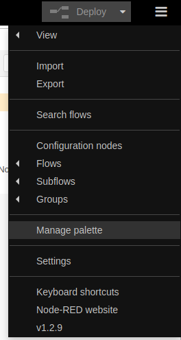
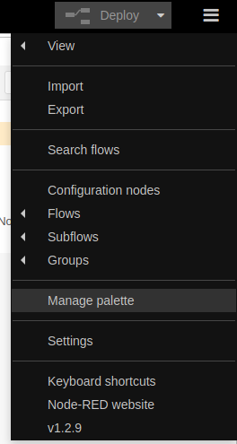
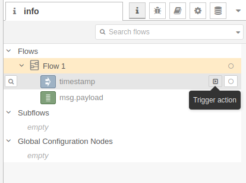
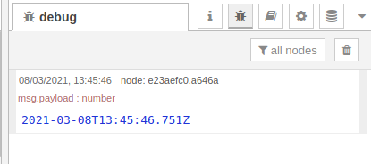

NodeRed Introduction
Installation
 

- Update your system.
- Install Node.js and npm.
- Install Node-RED.
- Test installation.
- Can install new nodes in folder
~/.node-red - Or click the manage palette, go to Install.
sudo apt-get update
sudo apt-get upgrade -y
sudo apt-get install nodejs
sudo apt install npm
sudo npm install -g --unsafe-perm node-red node-red-admin
sudo ufw allow 1880
node-red
# In browser 127.0.0.1:1880
npm i node-red-node-email
npm i node-red-dashboard
Basics


- Drag inject and debug to Flow.
- Link them together.
- Click Deploy.
- At right hand panel, under info (ctrl+g i), click Trigger action for timestamp.
- Under debug (ctrl+g d), you can see the message.
- Can use function in between.
var newString = msg.payload.replace("world", "From Node-Red");
msg = {payload:newString};
return msg;
References
- Step by step guide to install Node-RED on Ubuntu 18.04 LTS
- node-red-node-mysql
- Beginners Guide To The Paho MQTT Python Client
- Intro to Node-RED: Part 1 Fundamentals